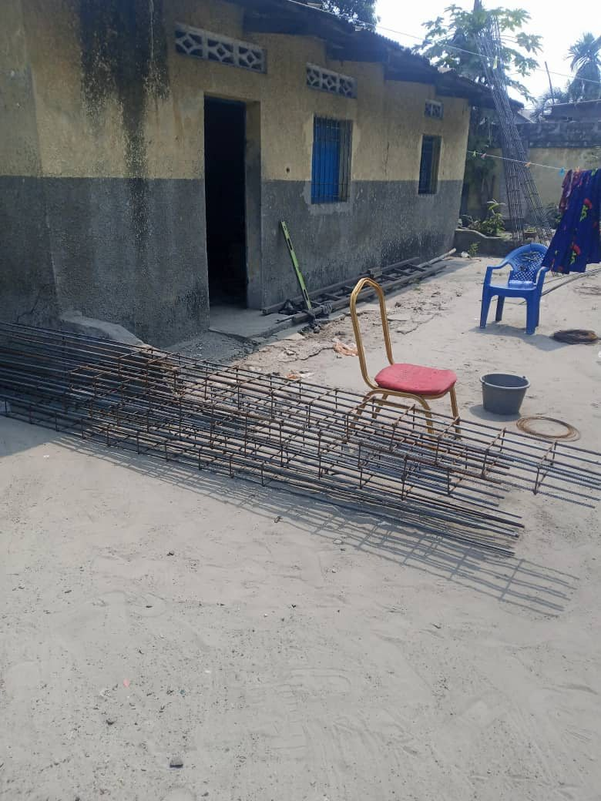
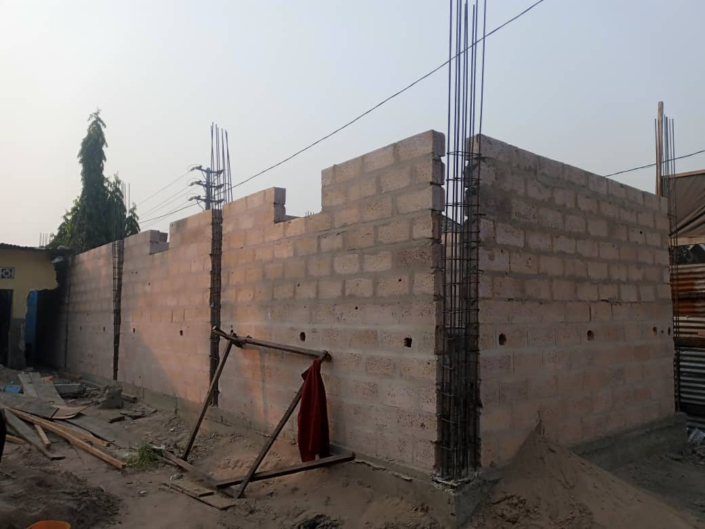
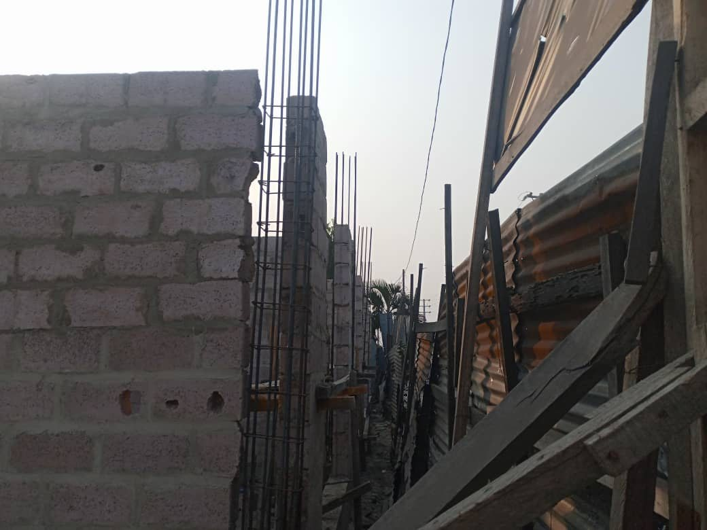
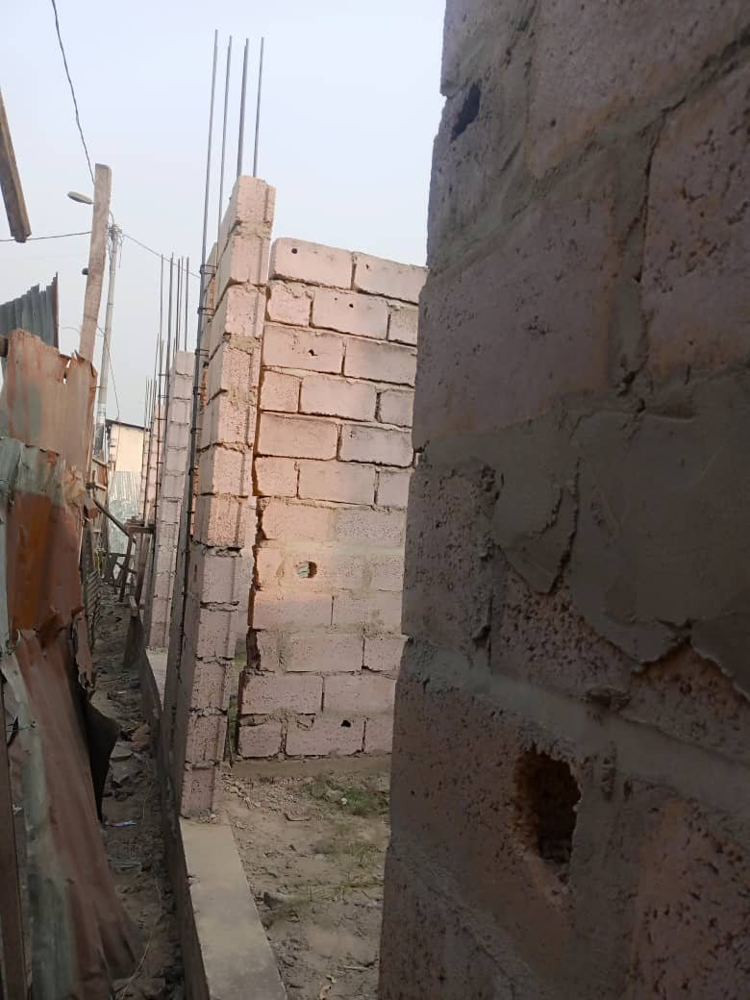
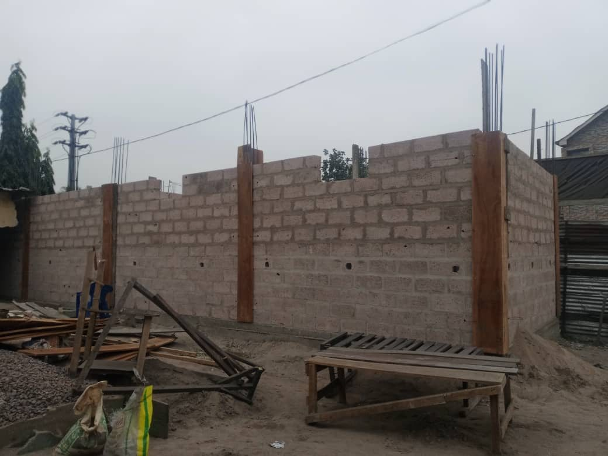

Notre mission
Concevoir, fournir et coordonner des solutions utiles qui améliorent durablement les activités de nos clients et partenaires.
TBTC GROUP · KINSHASA
Construction, formation, technologies, développement d’affaires et solutions agro-pastorales : TBTC Group mobilise ses compétences pour répondre avec méthode aux besoins des particuliers, entreprises et institutions.
Notre groupe
TBTC Group rassemble des compétences techniques, commerciales et opérationnelles autour d’un même objectif : proposer des réponses concrètes, adaptées au contexte et pilotées avec rigueur.
Notre organisation par départements permet d’orienter chaque demande vers les bons spécialistes, tout en conservant une coordination commune et un interlocuteur identifiable.
Concevoir, fournir et coordonner des solutions utiles qui améliorent durablement les activités de nos clients et partenaires.
Devenir un groupe congolais de référence, reconnu pour la diversité de ses expertises, sa fiabilité et sa capacité d’exécution.
Écoute, transparence, qualité du travail, respect des délais convenus et amélioration continue de nos méthodes.
Nos départements
Chaque département possède sa spécialité, son code couleur et une offre structurée pour faciliter l’orientation de vos besoins.
Études, conception, devis, suivi et exécution de travaux de bâtiment et d’infrastructures.
Développement des compétences pour professionnels, entreprises, étudiants et particuliers.
Solutions de géolocalisation, de télématique et de gestion de flotte en temps réel.
Commerce technologique et accompagnement des entreprises dans leur développement.
Fourniture, installation et maintenance de systèmes informatiques et électroniques.
Production animale, intrants, accompagnement de fermes et conseil agro-pastoral.
Focus expertise
Le pôle Construction prépare les études et estimations, organise les travaux et assure un suivi technique adapté au projet. Chaque intervention est cadrée par un devis et des étapes de contrôle.
Conception & étudeAnalyse des besoins, plans, métrés et proposition technique.
Devis détailléQuantités, matériaux, main-d’œuvre et modalités du projet.
Exécution & suiviCoordination, contrôle de l’avancement et compte rendu.
Sur le terrain
Quelques vues de chantier illustrant les interventions de structure, de maçonnerie et de contrôle technique.





Notre méthode
TBTC organise chaque collaboration autour d’étapes simples qui facilitent la compréhension, la décision et le suivi.
Démarrer une discussion →Nous identifions votre besoin et le département le mieux placé pour vous accompagner.
Le périmètre, les livrables, le budget et le calendrier sont clarifiés dans une proposition.
Les équipes mobilisées exécutent la mission selon les engagements convenus.
Nous vérifions l’avancement, partageons les informations utiles et clôturons la prestation.
Pourquoi TBTC
Votre demande est orientée et suivie sans multiplier inutilement les contacts.
Les départements peuvent se coordonner lorsque votre projet mobilise plusieurs métiers.
Les prestations sont cadrées par des documents clairs, des étapes et des modalités définies.
Nos orientations tiennent compte du contexte local et des réalités opérationnelles.
Parlons de votre projet
Indiquez le département concerné et l’objectif recherché. Notre équipe vous orientera vers la prochaine étape.
Kinshasa, République démocratique du Congo
Adresse complète : #